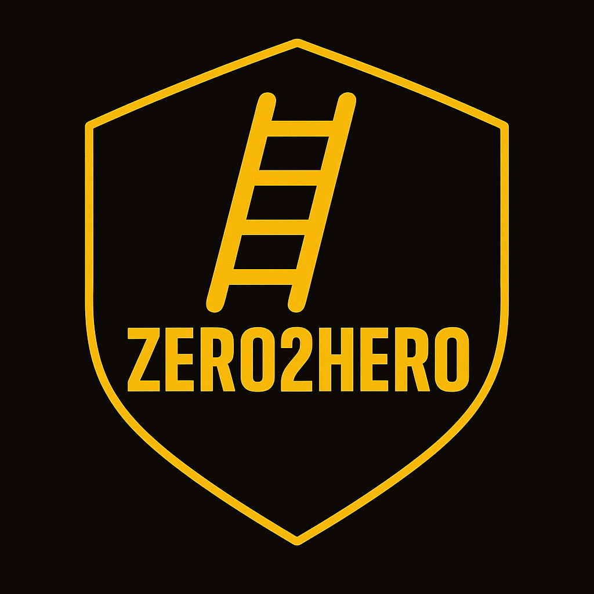

Heroes Build Heroes
Everyone starts at zero. Every step is earned. From Shadow to Legend, the ladder represents discipline, commitment, and growth. Level up, earn your points, prove the work through XP — and give back as you rise.
Zero2Hero – The Path Everyone Walks
Every athlete starts at Zero. Every step is earned. Every hero gives back. This is the ladder that binds generations together.
- 9 tiers (0–8) for youth. 5 tiers (0–4) for Teen/Adult
- Visible milestones: XP, stripes, and badges.
- Completion means more than skills — it means leadership.
Result: a clear path to grow, give back, and leave the room better than you found it.